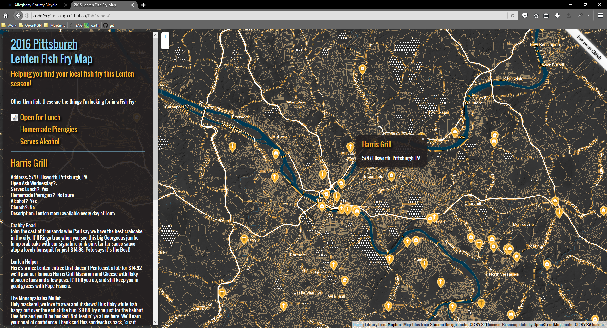

What is Maptime?
Founded by some friends at Mapbox and Stamen Design in the Bay Area.
Now, chapters worldwide.
A time for learning about maps
Hands-on, beginner-focused
Emphasize open-source, programming, and web mapping
MaptimePGH has piggy-backed on Code for Pittsburgh since the beginning
Providing that extra bit of geospatial tech help to open data projects
An editable geo-database of the world.
The wikipedia of maps.
powering more and more everyday mapping applications.
Provides raw data; other tools used for styling and analyzing.
Coordinating to get local base datasets into OSM
buildings, roads
Fundamentals.
map projections
data storage formats (boring but important!)
raster vs vector


FOSS4G: Free and open source tools for geo
Some libraries: Mapnik, OpenLayers, Leaflet

Some platforms: Mapbox, Mapzen, Carto


Interested in learning or teaching? Let me know!